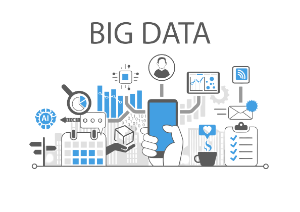

Portfólio Lucas Ribeiro
Sistemas de Informação - FMG
Tecnologias
SISTEMAS DE CRIPTOGRAFIA
Uma criptografia é uma espécie de código conversor de textos. Um determinado arquivo ou programa tem seu código
fonte transformado com base em um padrão. Por exemplo, trocando todas as letras por números. A menos que o
leitor possua a mesma chave de conversão ou conheça o padrão utilizado, ele não poderá acessar as informações
criptografadas. Hoje em dia, possuir um ou mais sistemas de criptografia dentro da sua empresa é praticamente
obrigatório.
Dependendo do nível de complexidade do código utilizado, é possível garantir que nenhuma informação seja
acessada, mesmo que os dados tenham sido capturados em uma invasão. Muitos provedores de serviços tecnológicos,
especialmente armazenamento em nuvem, oferecem sua própria criptografia para garantir a segurança de seus
clientes.
- Vantagens da Criptografia
-
Confidencialidade: Apenas o destinatário tem a permissão de extrair o conteúdo da mensagem em sua
forma encriptada.
-
Integridade: O próprio destinatário verificará se a mensagem obteve modificações durante sua
transmissão.
-
Autenticidade do Remente: O destinatário deverá ter a capacidade de identificação do remetente e
de verificação de que o mesmo o enviou a mensagem.
-
Não-repúdio: O remente não poderá negar o envio da mensagem.
- Desvantagens da Criptografia
-
Uso da mesma chave: Uma das principais desvantagens da criptografia simétrica é o uso da mesma
chave tanto para criptografar como para descriptografar os dados. Por isso, todas as partes que enviam e
recebem os dados devem conhecer ou ter acesso à chave de criptografia.
-
Problema de gerenciamento de segurança:Um problema de gerenciamento de segurança existe porque a
organização deve enviar essa chave de criptografia a todos que requisitarem acesso aos dados
criptografados. Os problemas de gerenciamento de chaves que uma organização deve considerar incluem a
geração, a distribuição, o backup, a nova geração e o ciclo de vida da chave.
- A criptografia simétrica fornece autorização para dados criptografados: Ao usar a criptografia
simétrica, uma organização pode estar razoavelmente certa de que apenas as pessoas autorizadas a acessar
a chave de criptografia compartilhada podem descriptografar o texto codificado.
Quem usa a criptografia?
A criptografia de segurança de dados é amplamente usada por usuários individuais e grandes corporações para
proteger as informações dos usuários enviadas entre um navegador e um servidor. Essas informações podem incluir
de tudo, desde dados de pagamento até informações pessoais.
MÍDIAS SOCIAIS
Apesar de já serem uma das tecnologias mais usadas por muitas pessoas, as redes sociais só passaram a ser uma
ferramenta fundamental nas empresas há pouco tempo. Não estamos nos referindo apenas às redes sociais mais
conhecidas, mas também ao conceito de mídia social.
Além de estar presente em redes como o Facebook e o LinkedIn, você também pode utilizar os mesmos princípios das
mídias sociais em sua empresa. Um exemplo é criar um aplicativo específico da empresa em que seja possível se
comunicar com seus clientes diretamente, respondendo dúvidas e dialogando.
- Vantagems das midias sociais
-
Comunicação instantânea: Podemos compartilhar informações, notícias, eventos muito rapidamente,
os acontecimentos do mundo podem ser acompanhados e divulgados em tempo real.
-
Entretenimento: Redes sociais também são canais de entretenimento, podemos ler artigos e
postagens que nos interessam, ver vídeos, fotos etc.
-
Facilidade:As redes sociais possibilitam muitas atividades positivas e facilitam a vida de
pessoas e instituições, elas criaram espaços para novos tipos de negócios, novos empregos, novas formas
de comunicação.
- Desvantagens das midias sociais
-
Perda de concentração: São tantas informações, tantas novidades o tempo todo, que muitas vezes
acessamos uma rede social por um fim específico e nos perdemos em outras coisas que nos chamaram a
atenção.
-
Falta de confiança: Infelizmente as redes sociais não garante 100% de confiança à seus usuários.
Às vezes, o próprio usuário não é tão precavido e disponibiliza muitas informações para qualquer um
visualizar.
-
Distração: Se não mantermos o foco, podemos perder horas navegando e deixamos de fazer atividades
que são mais importantes no nosso dia a dia. Podemos atrasar trabalhos, ou gastar horas com assuntos que
não nos estão acrescentando.
Quem usa as midias sociais?
As mídias sociais são utilizadas por grandes empresas para e-commerce, marketing, transmissão de informações.
Empresas como Google, Microsoft, Amazon, utilizam as midias sociais pois atingem o maior número de pessoas.
BIG DATA
Um dos conceitos mais recorrentes dentro das empresas e também um dos mais úteis. Acumular informações de
múltiplas fontes e ser capaz de analisá-las em conjunto é fundamental para tomar boas decisões empresariais.
Especialmente em grandes negócios. Considerando que a velocidade com a qual os dados surgem é crescente, nenhuma
pessoa pode acompanhar isso sozinha.
A tendência é que, em pouco tempo, o big data evolua ainda mais. Ele já é uma das tecnologias mais usadas em
grandes empresas devido ao processamento de informações relevantes. Estima-se que logo ele deva ser capaz de
gerar ações empresariais praticamente em tempo real.
- Vantagens do Big Data
-
Volume: Por ter grandes quantidades de dados para processar (gigabytes, terabytes, petabytes,
entre outros), é comum que as empresas tenham dificuldades, afinal como dar conta de tanta informação?
-
Velocidade: Ter grande volume de dados demanda de alta velocidade de processamento Hoje, mais do
que nunca, tempo é dinheiro e, para evitar prejuízos, os dados devem ser processados de forma quase
instantânea.
-
Variedade: O big data também captura dados como links, vídeos, áudios, textos, sensores e muito
mais. Aqui aplica-se o conceito de Any Data (qualquer dado, estruturado e não estruturado).
-
Dados estruturados: São informações que possuem padrões e formatos que são de fácil leitura e
extração como arquivos de textos (txt, csv e xml).
- Desvantagens do Big Data
-
Infraestrutura específica: Estamos falando de uma quantidade gigantesca de dados, então de nada
adianta investir em big data se não há uma boa infraestrutura para armazenar e processar estes dados.
-
Investimento alto: Para as empresas aí está um um grande desafio: o custo é alto tanto em
ferramentas de apoio quanto na aquisição mão de obra qualificada.
-
Variedade: O big data também captura dados como links, vídeos, áudios, textos, sensores e muito
mais. Aqui aplica-se o conceito de Any Data (qualquer dado, estruturado e não estruturado).
-
Privacidade e segurança: Para o usuário final, a desvantagem pode ser a privacidade. Hoje os
sistemas têm coletado diversos tipos de dados como movimentações e perfis nas redes sociais, por
exemplo. Para as empresas, precisa haver um cuidado maior em relação a segurança destes dados. Como
serão armazenados? Como a identidade do dono daquela informação está sendo protegida?
Quem usa o Big Data?
Engenheiro de Dados - O engenheiro é responsável por gerenciar, otimizar e monitorar a gestão, o
armazenamento e
a distribuição de dados na empresa.
Arquiteto de dados - é quem propõe uma estratégia de dados para a empresa, pensando em padrões,
armazenamento de
fluxos de dados, organização e segurança.
Desenvolvedor - é quem cuida da programação, revisa e testa os códigos.
Cientista de dados - Também pode ser chamado de analista de dados. É o responsável por fazer toda
análise e
interpretação dos dados disponíveis.
Administrador DBA - Profissional responsável por gerenciar banco de dados. Ele pode gerenciar o
big data, mas é
difícil acontecer.
